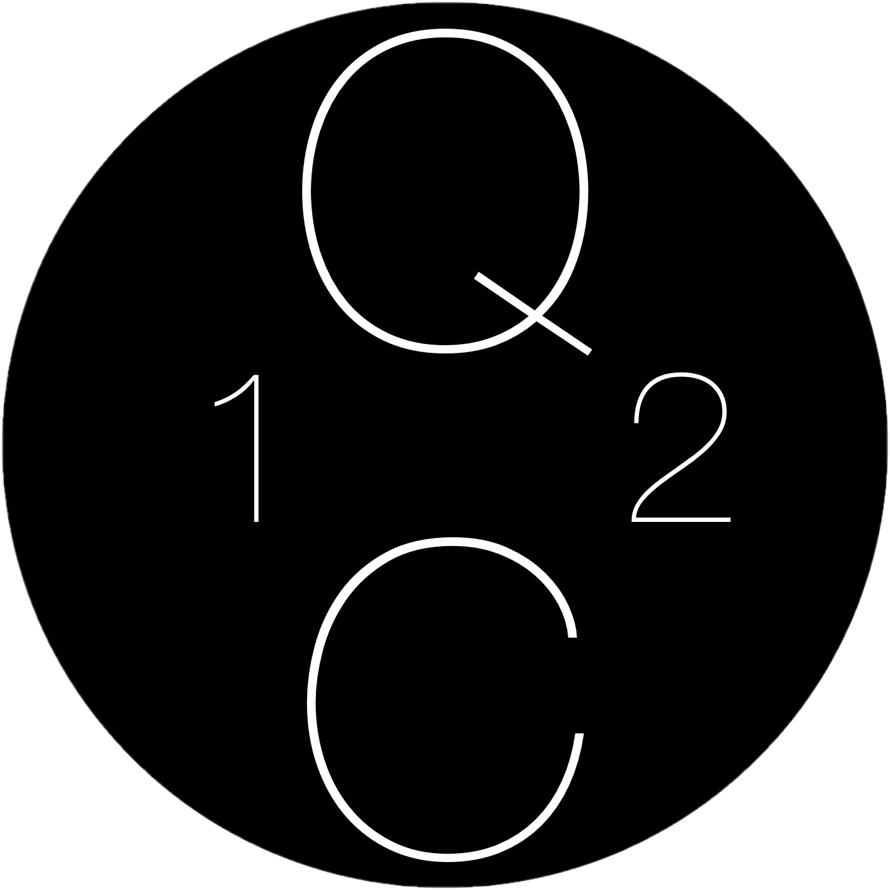

QuickCompute
Fast + Modern + Computation = QuickCompute
QCalc
All the functions you need...
With QCalc online calculation has never been easier. With all the functions found on a standard calculator, QCalc all but eliminates the need for anything else.
... and more
Apart from the standard functions, QCalc also offers a host of scientific and extra functions ranging from memory additions to trig functions. These functions can be accessed by a simple tap of the 'Ex' button.
w
Colors...to suit everyone's style.
QElements
A periodic table like no other
QElements brings a new experience to using a periodic table. Hover on an element to reveal more information, quickly fet visual feedback when hovering over 'Halogens', and speed up calculations with the built molar mass calculator.
Easy input
Molar calculators have never been more user friendly. Simply click on an element, enter the number of that element, and hit add. Your input is immediately displayed on the bar above, subscript and all.